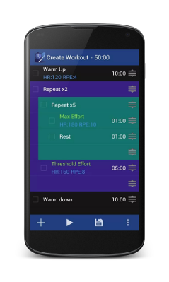
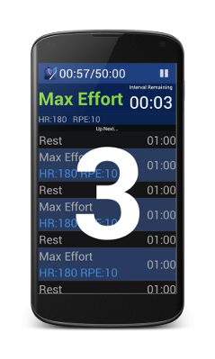

Turbo Intervals
Making it easy to create your perfect interval session.
This Android App is a highly customisable interval timer and workout guide to use whilst training indoors.
- Set targets for each interval (Speed, Heart Rate, Power, Cadence, Effort Level).
- Easily create repeated blocks
- Customisable spoken motivational messages. (You can record your own as well)
- Interval names and their duration are spoken during the workout when they become active.
- Frequently used intervals can be saved as templates for quick access when creating sessions.
- Build your own workout library.

